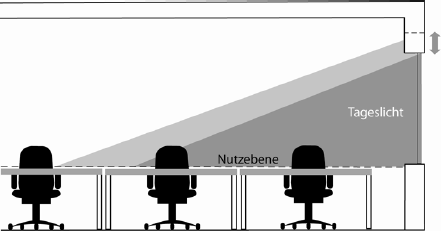

(1) Die Arbeitsstätten müssen möglichst ausreichend Tageslicht erhalten. Eine Beleuchtung mit Tageslicht ist der Beleuchtung mit ausschließlich künstlichem Licht vorzuziehen. Helle Wände und Decken unterstützen die Nutzung des Tageslichts. Tageslicht weist Gütemerkmale auf (z. B. die Dynamik, die Farbe, die Richtung, die Menge des Lichts), die in ihrer Gesamtheit von künstlicher Beleuchtung nicht zu erreichen sind. Tageslicht hat im Allgemeinen eine positive Wirkung auf die Gesundheit und das Wohlempfinden des Menschen.
(2) Tageslicht kann durch Fenster, Dachoberlichter und lichtdurchlässige Bauteile in Gebäude gelangen. Eine gleichmäßige Lichtverteilung kann mit Dachoberlichtern erreicht werden, wenn der Abstand der Dachoberlichter voneinander nicht größer als die lichte Raumhöhe ist.
(3) Die Anforderung nach ausreichendem Tageslicht wird erfüllt, wenn in Arbeitsräumen:
Die Anforderungen gelten auch für Aufenthaltsbereiche in Pausenräumen.
Wenn die Forderung nach ausreichendem Tageslicht in bestehenden Arbeitsstätten oder auf Grund spezifischer betriebstechnischer Anforderungen nicht einzuhalten ist, sind im Rahmen der Gefährdungsbeurteilung andere Maßnahmen zur Gewährleistung der Sicherheit und des Gesundheitsschutzes erforderlich. Eine andere Maßnahme besteht in der Einrichtung und Nutzung von Pausenräumen mit hohem Tageslichteinfall in Verbindung mit einer geeigneten Pausengestaltung.

Abb. 2: Beispiel für die Tageslichtversorgung in Abhängigkeit von der Raumhöhe sowie der Größe und Anordnung des Fensters
(4) Für die Beleuchtung von Arbeitsplätzen mit Tageslicht sind in Fenstern und Dachoberlichtern Verglasungsmaterialien zu verwenden, die zu einer möglichst geringen Veränderung des Farbeindrucks führen.
(1) Störende Blendung durch Sonneneinstrahlung ist zu vermeiden oder, wenn dies nicht möglich ist, zu minimieren. Zur Begrenzung störender Blendungen oder Reflexionen können z. B. Jalousien, Rollos und Lamellenstores dienen. Bei Dachoberlichtern können dies z. B. lichtstreuende Materialien oder Verglasungen mit integrierten Lamellenrastern sein.
(2) Die Anforderungen aus der ASR A3.5 "Raumtemperatur" bezüglich übermäßiger Sonneneinstrahlung (siehe Abschnitt 4.3 sowie Tabelle 3 der ASR A3.5) sind zu beachten.